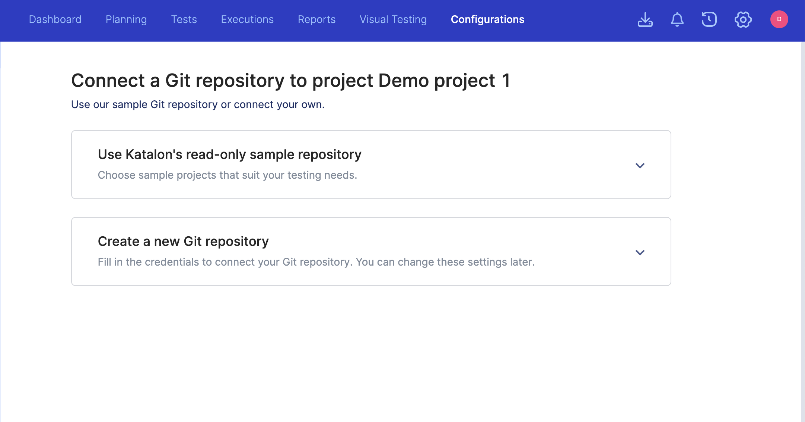
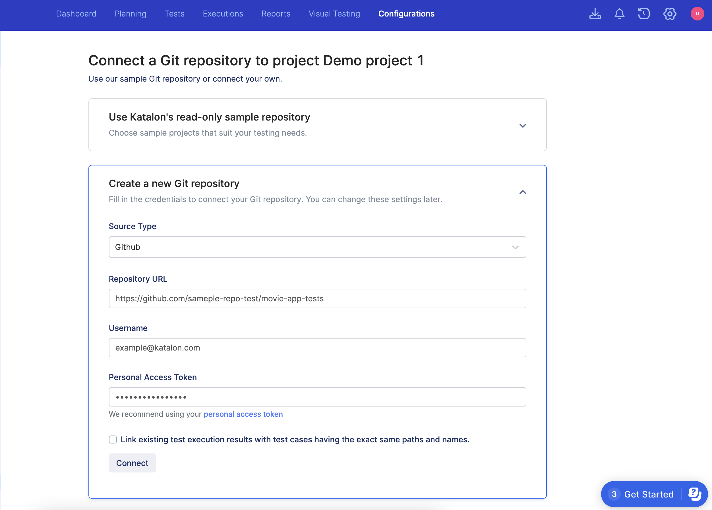
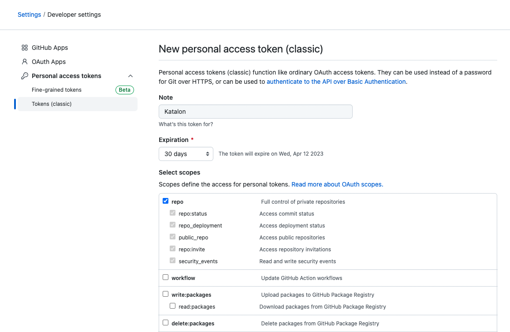

Upload test scripts from a Git repository
You have an existing test project in Azure Repos / Bitbucket / GitHub / GitLab / AWS CodeCommit.
- Sign in Katalon TestOps and go to the project you want to upload the test scripts to.
- Go to Configurations > Script Repositories > Connect Git Repository. Click Create a new Git repository.The Create a new Git repository tab appears.
- In the Source Type dropdown list, choose one of the following source types:
- Azure Repos
- Bitbucket
- GitHub
- GitLab
- AWS CodeCommit. When you select the AWS CodeCommit option, the Access Key ID and Secret Access Key fields are enabled. Currently, Katalon Studio does not support AWS CodeCommit yet.
- In the Repository URL field, enter the URL of your Git script repository. If you choose AWS CodeCommit, you can refer to this AWS document to retrieve the repository URL: Step 4: Connect to the CodeCommit console and clone the repository.
- In the Username field, enter your Azure Repos / Bitbucket / GitHub / GitLab / AWS CodeCommit username.
- In the Personal Access Token field, enter your personal access token (PAT). To create a PAT, you can refer to the following documents:
- For Azure Repos, see this Microsoft document: Use personal access tokens.
For Bitbucket, refer to this Atlassian document: Create an App password.
For GitHub, see this GitHub document: Creating a personal access token. Make sure you opt to create a classic PAT, and select repo scope to set permission scopes for the PAT.
For GitLab, refer to this GitLab document: Personal access tokens.
For AWS CodeCommit, to create username and PAT for Git credentials, refer to this AWS document: Step 3: Create Git credentials for HTTPS connections to CodeCommit.
- In the Access Key ID and Secret Access Key fields, enter your access key ID and secret access key in AWS CodeCommit. To retrieve the access key ID and secret access key, you can refer to this AWS document: Manage access keys for IAM.
- Optional: You can choose Link existing test execution results with test cases having the same paths and names. This option allows TestOps to attach existing test run results to the uploaded test cases and test suites that has the same paths and names.For example:
You have an existing test run results from the Login test case in the
Test Cases/Common Test Casesfolder. By default, if this test case is not from an uploaded Git test project, its test results are in the Uploaded Data folder in the Test Management tab.You upload a Git repository that also has a Login test case in the
Test Cases/Common Test Casesfolder.You check the Link existing test execution results with test cases having the same paths and names option.
Once the Git repository is connected successfully, in the Test Management tab, you can see the existing test results of the Login test case in the
<your-git-repo-name>/Test Cases/Common Test Casesfolder.
- Click Connect.
The following sections appear:
- Branch: choose a branch.
- Name: enter your project name.
Description: enter your Git project description (optional).
- Click Create.